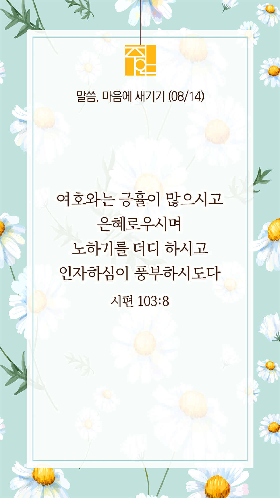

기도실 안내
2022년 08월 14일 (주일)
- 온라인 기도실은 온 회중이 함께 주님 앞으로 나아가는 자리입니다.
- 30분 정도 여유를 가지고 하시기 바랍니다.
- 말씀과 묵상, 찬양과 기도로 나아갑니다.
- 배경 음악이 나올 수 있습니다 볼륨을 조절해주세요.
준비가 되셨으면 아래의 버튼을 눌러주세요.
할렐루야
내 영혼아 여호와를 찬양하라
시 146:1
- 가사를 묵상하며 읽습니다.
마음이 상한 자를
마음이 상한 자를 고치시는 주님
하늘의 아버지 날 주관하소서
주의 길로 인도하사 자유케 하소서
새 일을 행하사 부흥케 하소서
의에 주리고 목이마르니
성령의 기름 부으소서
의에 주리고 목이 마르니
내 잔을 채워주소서
할렐루야
내 영혼아 여호와를 찬양하라
시 146:1
- 가사를 묵상하며 읽습니다.
성령으로 채우사 주 보게 하소서
주의 임재 속에 은혜 알게 하소서
주 뜻대로 살아가리 세상 끝날까지
나를 빗으시고 새날 열어주소서
의에 주리고 목이 마르니
성령의 기름 부으소서
의에 주리고 목이마르니
내 잔을 채우소서
할렐루야
내 영혼아 여호와를 찬양하라
시 146:1
마음이 상한 자를
by 비컴퍼니
위의 찬양이 끝나면 말씀읽기를 눌러주시면 됩니다.
주의 말씀은 내 발에 등이요
내 길에 빛이니이다 (시119:105)
오늘의 말씀입니다.
음악 소리가 크면 조절하시기 바랍니다.

마음의 묵상
시 103:8
“여호와는 긍휼이 많으시고 은혜로우시며 노하기를 더디 하시고 인자하심이 풍부하시도다”
1. 여호와의 성품이 어떠하다고 말씀하나요?
2. 긍휼, 은혜, 인자하심이 풍성하신 하나님을 신뢰하시나요?
3. “인자하신 주님, 저에게 긍휼과 은혜를 베풀어주소서” 간절히 기도합시다.
오래 참아주시는 주님께 감사를 드립니다.
회개, 삶의 방향을 바꾸는 결정
주님, 저를 불쌍히 여겨주소서.
“나의 곤고와 환난을 보시고
내 모든 죄를 사하소서”
- 시편 25:18 -
3분 정도 회개하며 주님 앞에 나아갑니다
사슴이 시냇물을 찾기에 갈급함 같이
시 42:1
- 다음의 말씀을 소리 내어 읽습니다.
[시편 62편 1-5절]
1 나의 영혼이 잠잠히 하나님만 바람이여 나의 구원이 그에게서 나오는도다
2 오직 그만이 나의 반석이시요 나의 구원이시요 나의 요새이시니 내가 크게 흔들리지 아니하리로다
3 넘어지는 담과 흔들리는 울타리 같이 사람을 죽이려고 너희가 일제히 공격하기를 언제까지 하려느냐
사슴이 시냇물을 찾기에 갈급함 같이
시 42:1
- 다음의 말씀을 소리 내어 읽습니다.
4 그들이 그를 그의 높은 자리에서 떨어뜨리기만 꾀하고 거짓을 즐겨 하니 입으로는 축복이요 속으로는 저주로다
5 나의 영혼아 잠잠히 하나님만 바라라 무릇 나의 소망이 그로부터 나오는도다
하나님 나라
1. 하나님의 나라가 속히 이 땅에 임하게 하소서
하나님 아버지,
기후 위기를 가져온 인간의 그칠줄 모르는 욕망과 교만함을 용서하여주시고, 전 세계인이 회개하며 지구와 환경을 사랑하며 보호하게 하소서. 갈수록 악화되고 있는 미국과 중국의 충돌을 멈추어주시고, 평화를 더하여주소서. 열방에 핍박 받고 있는 선교사님들을 지켜주시고, 복음이 계속해서 전파되게 하소서.
간절한 마음으로 3분 정도 기도합시다
남과 북
2. 남북한이 속히 복음으로 통일되게 하소서
하나님 아버지,
북미회담 실패, 미중경쟁 격화, 러시아-우크라이나 전쟁까지 겹치며 계속해서 긴장되고 있는 한반도에 하나님의 평강이 임하게 하소서. 북한 정권이 핵무기를 포기하고 대화의 장으로 나오게 하시고, 북한 주민들을 위한 정책이 준비되게 하소서. 굶주리고 병들어가는 북한 주민들에게 필요한 도움이 속히 임하게 하소서.
간절한 마음으로 3분 정도 기도합시다
대한민국
3. 우리나라가 하나님을 경외하는 나라가 되게 하소서
하나님 아버지,
집중 호우로 인해서 피해를 입은 이들을 긍휼히 여겨주시고, 주님께서 회복시켜주소서. 환란을 당한 소외 계층들과 경제적 취약 계층들의 눈에서 눈물을 씻어주시고, 그들을 도울 수 있는 정부의 정책이 잘 준비되게 하소서. 학교에서의 예배, 성경 교육을 금지하고 동성애 합법화를 위한 시도들이 중단되게 하소서.
간절한 마음으로 3분 정도 기도합시다
다음 세대
4. 한국교회가 성령으로 새롭게 부흥되게 하소서
하나님 아버지,
한국교회가 이웃의 아픔에 함께 공감하며 그들을 위해서 신실하게 기도하고 섬기는 교회가 되게 하소서. 예수님의 손과 발이 되어 주변 지역사회와 이웃들을 섬기면서 복음의 빛이 비추어지게 하소서. 한국 교회가 그러한 사명을 감당할 수 있도록 성령님께서 충만히 임재하여 주소서.
간절한 마음으로 3분 정도 기도합시다
주안교회
5. 주안교회가 선교적 삶으로 복음의 빛을 비추는 교회가 되게 하소서
하나님 아버지,
우리 곁에서 우리를 도우시고, 중재하시고, 위로하시는 보혜사 성령님을 보내주시니 감사합니다. 주안교회의 모든 성도들의 영적인 귀를 열어 주사 우리의 심령가운데 내주하시는 성령님의 음성에 귀를 기울이게 하시고, 보혜사 성령님의 인도하심과 그가 주시는 능력을 힘입어 선교적 삶을 살게 하여 주옵소서.
간절한 마음으로 3분 정도 기도합시다
감사의 기도
- 오늘 기도를 인도하신 주님께 감사를 올려드립니다.
- 아래의 구절을 읽고 주님께 감사의 마음을 올려드립시다.
“나의 구원과 영광이
하나님께 있음이여
내 힘의 반석과 피난처도
하나님께 있도다”
- 시편 62장 7절 -
고요한 가운데 잠시 침묵하시기 바랍니다.
파송, 세상을 향하여
- 오늘의 온라인 기도를 마쳤습니다.
기도를 들으신 주님께서 평안히 가라 하십니다.
주님께서 우리와 함께 하시니 두려울 것이 없습니다.
새벽을 깨우며
- 새벽기도회 안내입니다.